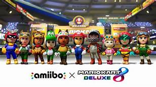
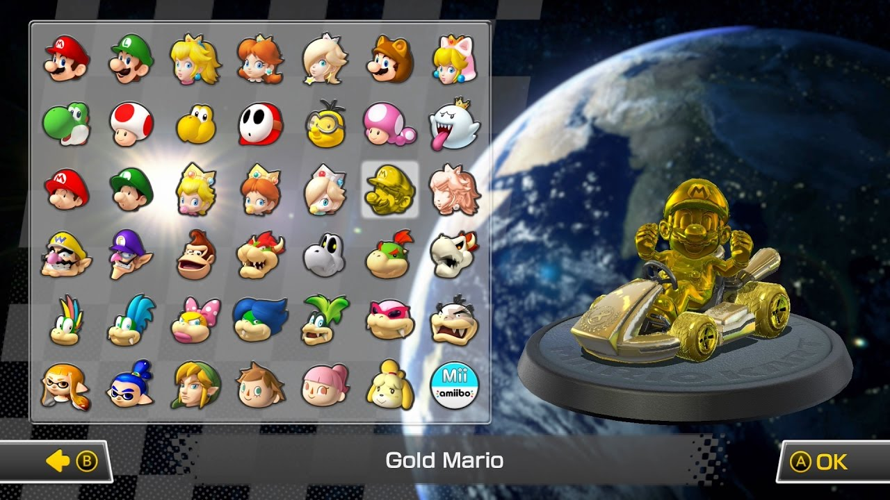
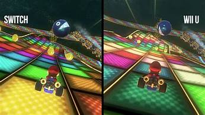

Game Play
If you play this game on switch, it's pretty easy to control. There're different buttons on the joycon, button A is for acceleration; button B is a brake button, it slows and stop your car when you press it, it's usually use for to get around sharp corners; the R button is to drift on corners but you can still maintain your speed. You can hold up to two items at once, you get the items when you drive through the question mark boxes, when you want to launch your item you can press L to launch it. There are a lot of characters avaliable for you to choose, such as mario, luigi, and even amiibo characters etc.
 